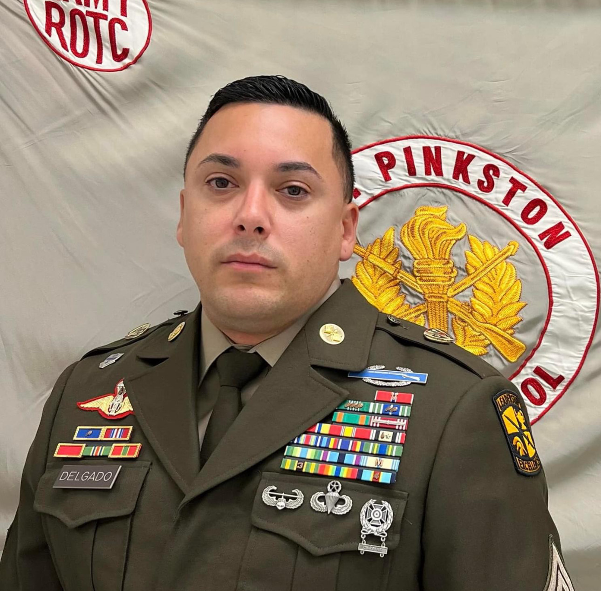

IN JROTC YOU WILL BE GIVEN THE CHANCE TO PARTICIPATE IN YOUR EDUCATION AND WILL LEARN TO BE A BETTER CITIZEN. THE PROGRAM PROVIDES YOU WITH TOOLS AND SKILLS YOU CAN USE TO SUCCEED IN HIGH SCHOOL, BUT FAR MORE IMPORTANT, THESE TOOLS AND SKILLS WILL BE USEFUL FOR THE REMAINDER OF YOUR LIFE.
JROTC CREED
I am an Army Junior ROTC Cadet.
I will always conduct myself to bring credit to my family , country , school and the Corps of Cadets.
I am loyal and patriotic. I am the future of the United States of America.
I do not lie , cheat, or steal and will always be accountable for my actions and deeds.
I will always practice good citizenship and patriotism.
I will work hard to improve my mind and strengthen my body.
I will seek the mantel of leadership and stand prepared to uphold the Constitution and the American way of life.
May God grant me the strength to always live by this creed.
ARMY VALUES
LOYALTY - to bear true faith and allegiance to the U.S. Constitution...your peers
DUTY - to fulfill your obligations
RESPECT - to treat people as they should be treated
SELFLESS SERVICE - to put the welfare of the nation...before your own
HONOR - to live up to all values
INTEGRITY - to do what is right, legally and morally
PERSONAL COURAGE - to face fear, danger, or adversity
Sergeant Major Rangel is currently employed as the Senior Army Instructor (SAI) at Pinkston High School, JROTC, Dallas, Texas. SGM Rangel is a native of Corpus Christi, Texas and a 1978 graduate of WB Ray High School. He started his military career in June 1978 until his retirement in August 2005. Upon completion of basic military training at Fort Leonardwood, Missouri, SGM Rangel was assigned to Bravo Company, 46th Engr Bn at Fort Rucker, Alabama. There he began Military Occupation Specialty (MOS) as a 51N, Plumber/Water Purification Specialist. SGM Rangel's other assignments include HHC 2ND Engr Bn, 2nd Infantry Division, Camp Castle, Korea. HHC, 307th Engr Bn, 82nd Airborne Division, Fort Bragg, North Carolina.
In 1982, SGM Rangel reenlisted as a Medical Equipment Repairer at the United States Medical Equipment and Optical School in Fitzsimmons Army Medical Center, Aurora, Colorado. Upon completion of his training he was assigned as a BMED Specialist to Womack Army Community Hospital, Fort Bragg, North Carolina. Additional assignments include: NCOIC of Med Maint, Brooke Army Medical Center, Fort Sam Houston, Texas, Platoon Sergeant, C Co 26th Forward Support Battalion, Aschaffenburg, Germany, Chief of Med Maint, Munson Army Community Hospital, Fort Leavenworth, Kansas, NCOIC of Logistics, 67th Combat Support Hospital, Wuerzburg, Germany, NCOIC of Med Maint, Darnall Community Hospital, Fort Hood, Texas, NCOIC of Med Maint, Beaumont Army Medical Center, Fort Bliss, Texas, and as the Senior Enlisted Advisor at DoD Biomedical Equipment Technician Training Course, Sheppard Air Force Base, Texas.
SGM Rangel's military awards include Bronze Star Medal, Meritorious Service Medal, Army Commendation Medal (2nd OLC), Army Achievement Medal (2nd OLC), Army Good Conduct Medal (9th Award), National Defense Service Medal (1 BSS), Southwest Asia Service Medal(3 SS), Armed Forces Service Medal, NCO Professional Development Ribbon (w/numeral 4), Army Service Ribbon, Overseas Service Ribbon (w/numeral 4), NATO Medal, Kuwait-Liberation Medal Southwest, Kuwait-Liberation Medal, Valorous Unit Award, Meritorious Unit Commendation, Expert Field Medical Badge, Airborne Badge, Drivers Badge, Expert Marksmanship Badge. He is a member of the Association of the United States Army (AUSA) and the U.S. Army NCO Museum Association
SGM Rangel's military education consists of: Primary Leadership Development Course, Basic Airborne Training, AMEDD Basic and Advanced NCO Courses, Basic and Advanced Biomedical Equipment Repair Course, Advanced Digital Theory, Poly Phase X-Ray, BRH Compliance Course, Equal Opportunity Course, Senior Leadership Course, and a Graduate of the United States Sergeants Major Academy Class 51. He holds a Bachelor's Degree in Business Administration through Wayland Baptist University and an Associates Degree in Applied Science through Regis University, Denver, Colorado.
1SG Jones
First Sergeant Jones is currently employed as an Army Instructor (AI) at L. G. Pinkston High
School, JROTC, Dallas, Texas. 1SG Jones is a native of Jackson, Mississippi and a 1984
graduate of Callaway High School. He started, his military career in April 1989 until, his
retirement in May 2013. Upon completion of Basic Military Training at Fort Dix, New Jersey,
1SG Jones was assigned to Bravo Company, 149 th Ordnance Battalion at Aberdeen Proving
Ground, Maryland. There, he began Military Occupation Specialty (MOS) as a 63W, Wheel
Vehicle Repairer. 1SG Jones’s other assignments include 501 st Forward Support Battalion,
Vilseck, Germany, 7 th Infantry Division, Fort Ord, California, 530 th Maintenance Company, Fort
Knox, Kentucky, 123 rd Main Support Battalion, Dexhiem, Germany, 172 nd Light Infantry
Battalion, Fort Wainwright, Alaska, 3 rd Forward Support Battalion, Fort Stewart, Georgia, 79 th
Ordnance Battalion, Fort Hood, Texas.
1SG Jones served 24 years in United States Army and was involved in 5 combat tours.
1SG Jones’s has held many positions, while serving in the United States Army, such as Platoon
Sergeant, Battalion Operations Sergeant, Battalion Maintenance Sergeant, Maintenance Control
Sergeant, First Sergeant.
1SG Jones’s military awards include Bronze Star Medal (4 th Award), Meritorious Service Medal
(2 nd Award), Army Commendation Medal (4 th Award), Army Achievement Medal (3 rd Award),
Army Good Conduct (8 TH Award), National Defense Service (1BSS), Armed Forces Service
Medal, NCO Professional Development Ribbon (w/numeral 3), Joint Meritorious Unit,
Meritorious Unit Commendation (2th Award), Mechanic Badge, Drivers Badge. He is a member
of the Veteran’s Foreign Wars (VFW).
1SG Jones’s military education consists of: Primary Leadership Development Course, Advanced
NCO Course, Basic NCO Course, Equal Opportunity Course, Advanced Military Transition
Team Course, Automotive Powertrain Course, Basic Instructor Training, First Sergeant Course.
He holds a Bachelor’s Degree in Drafting & Design through Prairie View A&M University,
Prairie View, Texas and a Master of Business Administration in Project Management through
Northcentral University, Tucson, Arizona.

SFC Delgado
Sergeant First Class (SFC) Hector L. Delgado, originally from San Juan, Puerto Rico
joined the United States Army on October 4, 2000, as an Infantryman. He attended One
Station Unit Training at Fort Benning, Georgia. SFC Delgado’s assignments during his
career include, Infantryman riffle Platoon Team leader, with the 3 rd Battalion, 75 th Ranger
Regiment and Squad Leader and Platoon Sergeant with the 3rd Battalion, 325th
Airborne Infantry Regiment, 82nd Airborne Division. Platoon sergeant, Operations NCO
and Communications Chief for Head Quarters and Head Quarters Company, 3 rd Special
Forces Group. Network Engineer Non-Commissioned Officer in Charge, Camp Red
Cloud, Republic of South Korea. Team Chief and 1 st Sergeant for Charlie Company, 39 th
brigade Engineer Battalion, Strike brigade, 101 st Airborne Division (Air Assault).
SFC Delgado’s military and civilian education includes all levels of Primary Military
Education, Master Gunner Course, Sexual Harassment/Sexual Assault Response and
Advocacy, Sling Load Inspection Course, Rappel Master, Observer/Controller and
Trainer Course, Ranger Indoctrination Program, Unit Mobilization Course, Basic
Airborne School, and the U.S. Army Advanced Airborne School, Air Assault School,
Naval Warfare Academy, Advance Marksmanship. COMPTIA Security+, COMPTIA
Network+ and CISCO certified Network Associate (CCNA) Certifications as well as a
bachelor’s degree with West University of Puerto Rico.
His awards and decorations include the Bronze Star Medal with Valor Device,
Meritorious Service Medal, Valorous Unit Citation, Meritorious Unit Citation, Army
Commendation Medal with three Oak Leaf Cluster, Army Achievement Medal with two
Oak Leaf Clusters, Army Good Conduct Medal with eight Awards, National Defense
Service Medal, Iraqi Campaign Medal with Silver Service Star and Arrowhead device,
Global War on Terrorism Expeditionary Medal, Global War on Terrorism Service Medal,
Noncommissioned Officer Professional Development Ribbon with three Awards, Army
Service Ribbon, Overseas Service Ribbon with five Awards, Combat Infantry Badge, the
Expert Infantry Badge, Sea Bees Naval Warfare Badge, the Master Parachutist Badge,
Air Assault Badge. SFC Delgado is a Bronze Order of Mercury recipient and is a
Distinguished Member of the 82 nd Airborne Division Association and The Signal
Regiment Association.
SFC Delgado’s deployments include support to the Global War on Terrorism, which was
comprised of one deployment in support of Operation Enduring Freedom Afghanistan,
six deployments Operation Iraqi Freedom, 1 Deployment Operation New Dawn and one
deployment to Syria. SFC Delgado also served a tour in the Republic of Korea and a
tour in Alaska.